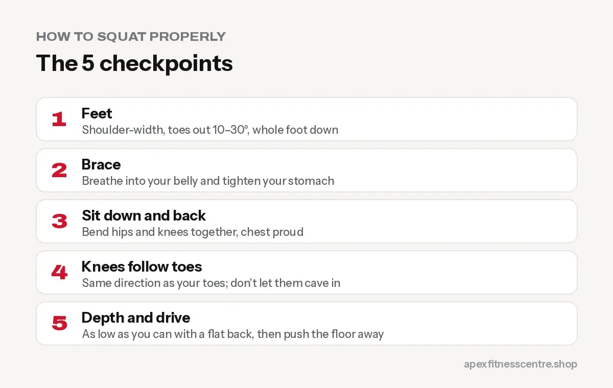

How to Squat Properly: Step-by-Step Form Guide for Beginners
Learn to squat with good form: foot position, depth, knees, back, breathing, common mistakes and fixes, plus easier and harder squat variations.

The squat is one of the best exercises you can do. It trains your thighs, glutes, core and back at the same time, and it is a movement you use every day, every time you sit down and stand up. Good form is simple once you know the five checkpoints below.
The 5 checkpoints of a good squat
1. Feet
Stand with your feet about shoulder-width apart, toes turned out slightly (roughly 10 to 30 degrees). Your whole foot stays on the floor: big toe, little toe and heel.
2. Brace
Take a normal breath into your belly, then tighten your stomach as if someone is about to poke it. This “brace” protects your lower back.
3. Sit down and back
Start the movement by bending your hips and knees at the same time, as if sitting onto a low chair behind you. Keep your chest proud and your eyes looking forward.
4. Knees follow toes
Your knees should travel in the same direction as your toes. They can move forward past your toes. That is normal and safe for most people. What you want to avoid is the knees collapsing inwards.
5. Depth and drive
Go as low as you can while keeping your back flat and heels down. For many people that is thighs parallel to the floor or slightly lower. Then push the floor away and stand up tall, breathing out near the top.

Common mistakes and quick fixes
| Mistake | Fix |
|---|---|
| Heels lift off the floor | Widen your stance a little, sit back more, or place small plates under heels while you work on ankle mobility |
| Knees cave inwards | Think “spread the floor” with your feet, use lighter weight |
| Lower back rounds at the bottom | Squat only as deep as you can stay flat, work on hip mobility |
| Leaning too far forward | Brace harder, keep the chest up, try a goblet squat |
| Bouncing out of the bottom | Slow down, pause for one second at the bottom |
The best squat for beginners: goblet squat
Hold a dumbbell or kettlebell vertically against your chest with both hands. The weight in front helps you sit upright and balance, which makes learning the pattern much easier.
Start with 3 sets of 10 using a light weight, and add a little weight when all sets feel smooth.
Squat progression
- Box or chair squat: sit down to a box, stand up. Great for first sessions.
- Bodyweight squat: no box, full control.
- Goblet squat: dumbbell at the chest.
- Barbell back squat: bar on the upper back, learned with a coach.
- Front squat or pause squat: for more advanced lifters.
Is squatting bad for your knees?
For healthy people, no. Squatting with good form and sensible weights strengthens the muscles that support your knees. Pain usually comes from too much weight too soon, poor technique or doing too much volume suddenly.
If you already have knee pain, start with box squats to a comfortable height, and see a physiotherapist if the pain does not improve.
How often should you squat?
For beginners, 2 to 3 times a week works well, for example as part of the full-body plan in our beginner gym workout plan.
Frequently asked questions
How low should I squat?
As low as you can with a flat back and heels on the floor. For most people, that is around parallel or just below.
Should my knees go past my toes?
They can. Knees travelling forward over the toes is normal in a deep squat. Focus on keeping them in line with your toes rather than caving in.
Should I wear a belt for squats?
Not as a beginner. Learn to brace without a belt first. A belt can help later for heavy sets.
Why do I feel squats in my lower back?
Usually because the back rounds at the bottom or you lean too far forward. Reduce the weight, squat a little higher, and practise bracing.
Sources
- ACSM position stand: progression models in resistance training for healthy adults (American College of Sports Medicine, 2009)
Want someone to check your squat? Ask a trainer at Apex Fitness Centre, it takes two minutes and saves months of bad habits.
General information, not medical advice. Ask a doctor if you have a health condition. Results vary from person to person.